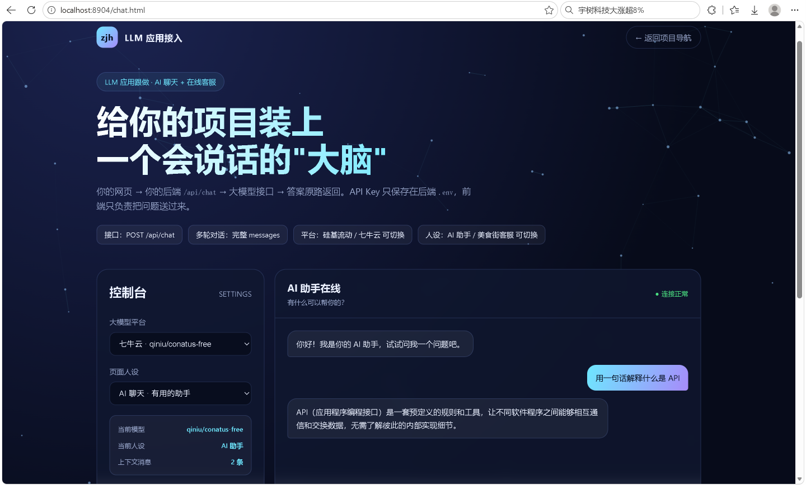
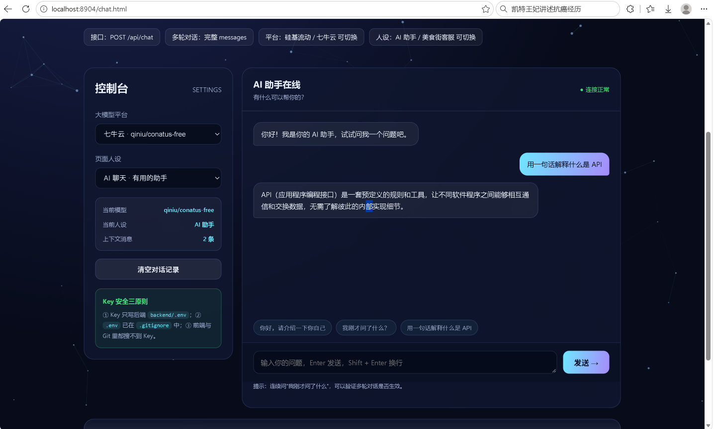
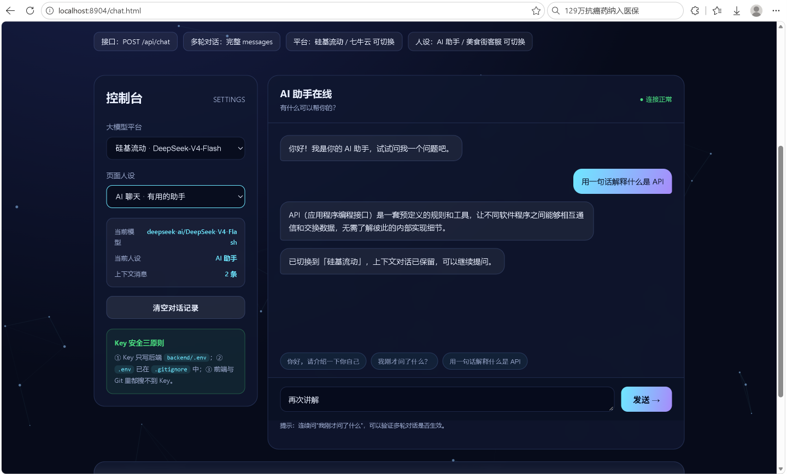
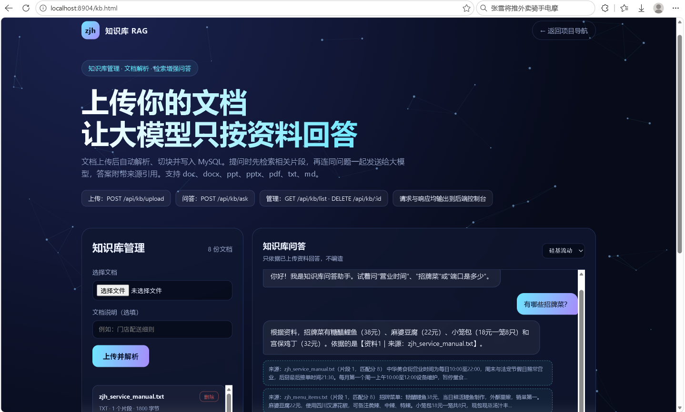
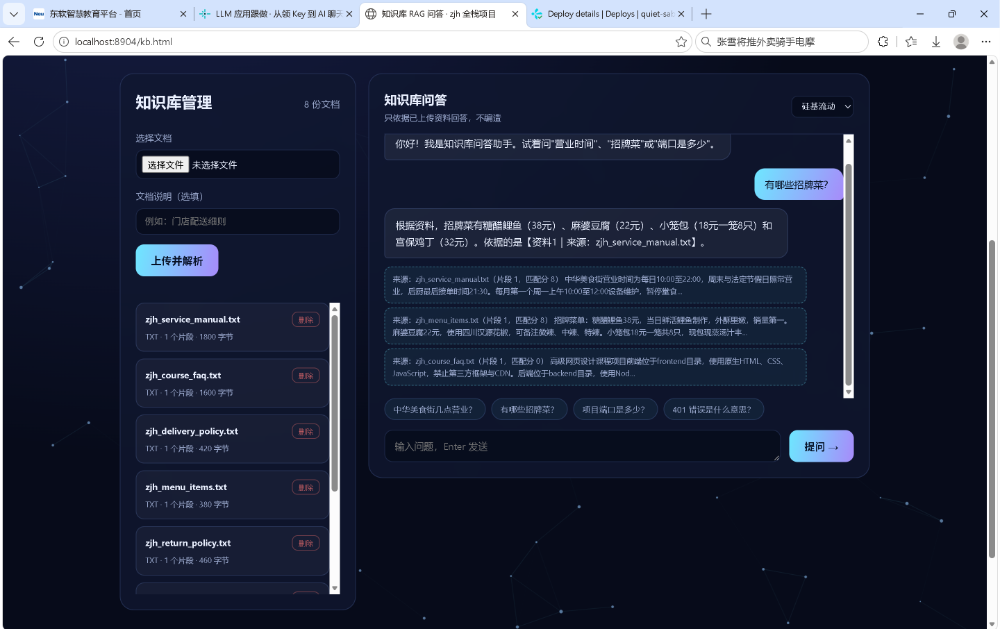
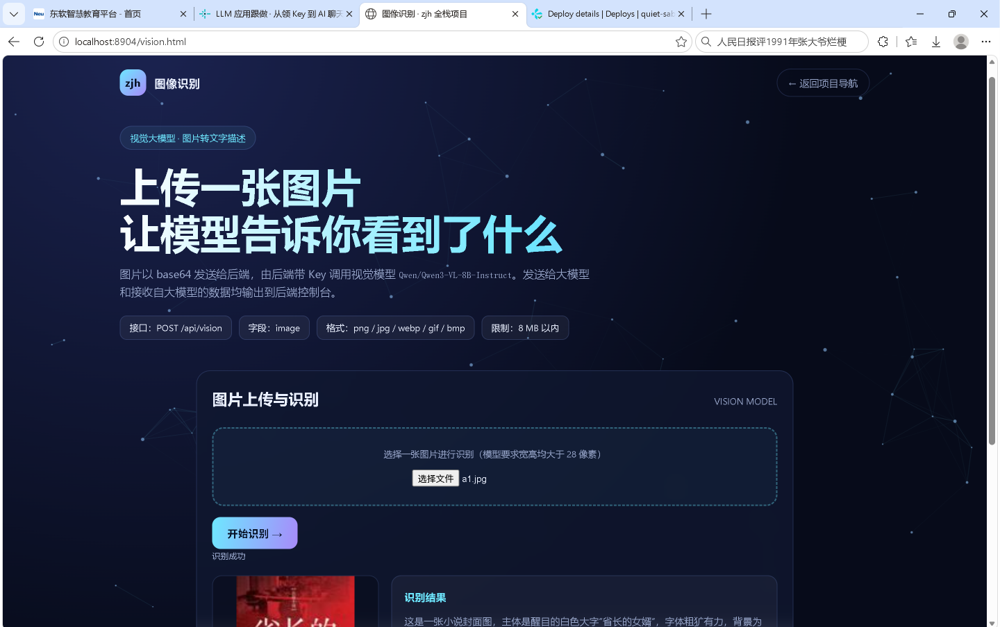
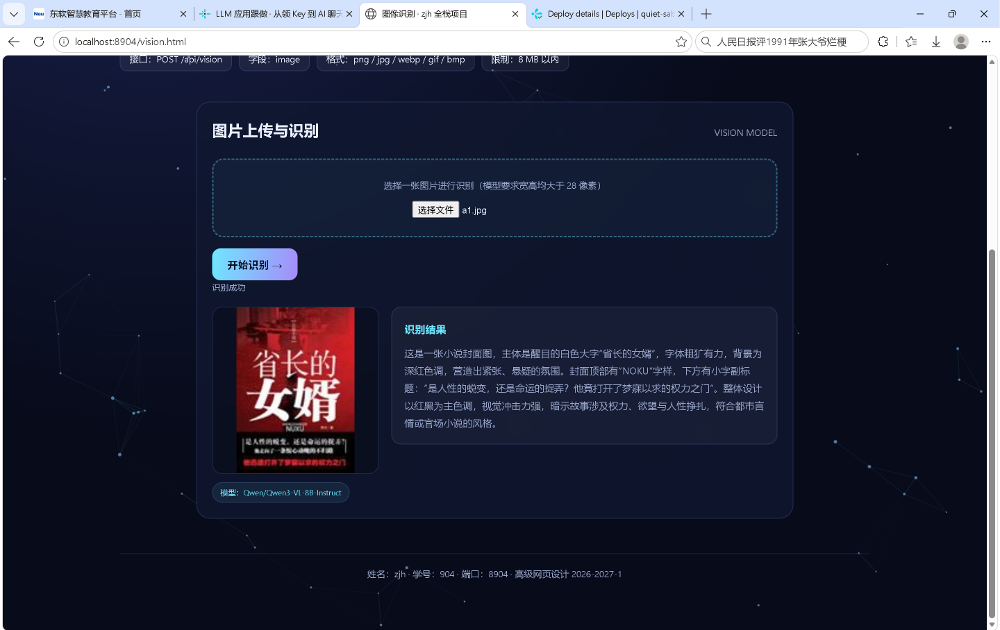
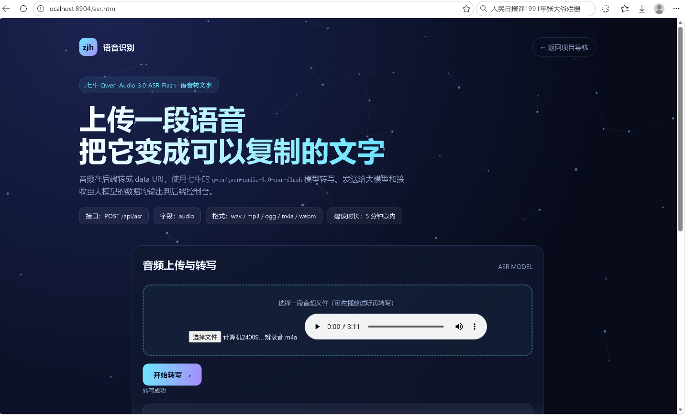
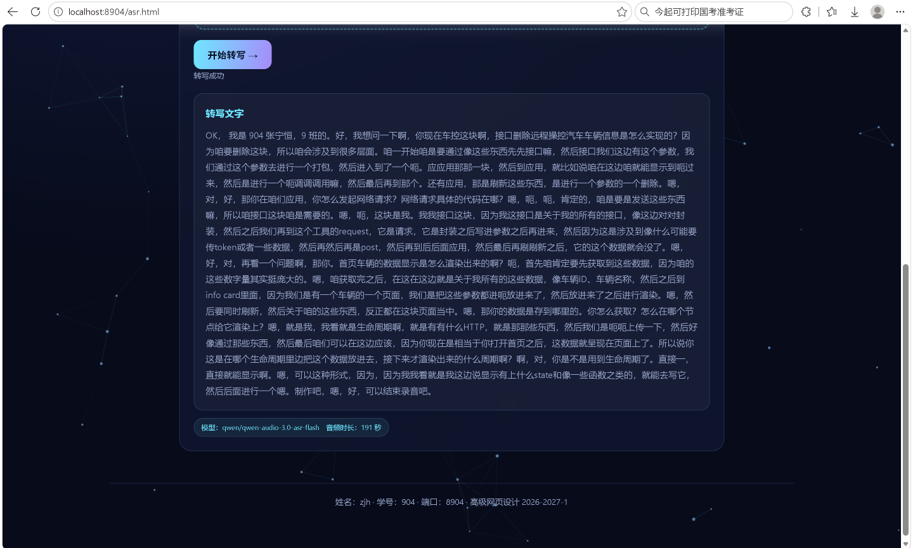

LLM 实际操作痕迹
这一页不是设计稿，是四项能力在我本机上的真实操作记录：平台切换客服、知识库问答、图像识别、语音识别。每一步都配上当时的页面截图与结果说明，可以直接对着讲。
页面支持在「硅基流动 / 七牛」之间切换实现 AI 客服
后端读取配置即可，前端只加一个下拉框；切换后现场继续提问，历史对话保留，照常对话。
两个平台的 BaseURL、Model ID、API Key 全部写在 backend/.env 里，前端下拉框只把 provider 名字传给后端，后端按白名单取出对应配置再转发。所以换平台不用改前端代码，更不用把 Key 暴露到浏览器。


.env、.env 已在 .gitignore、前端与 Git 里都搜不到 Key。
切换验证通过
换平台只动后端配置和下拉框选项，前端逻辑一行没改；提示语明确写出「上下文对话已保留」，说明多轮 messages 没有被清空——这就是「切换后照常对话」的证据。
完成知识库实现：自己上传文件，验证知识库功能
上传 → 解析 → 切块入库 → 检索 → 只按资料作答，答案后面附上引用的片段。
文档上传后由 officeparser（Office 系）和 pdf-parse（PDF）解析正文，按 600 字切块写入 MySQL 的 zjh_kb_chunk 表。提问时先做中文二元组加权检索、取相关度最高的 3 段，再连同问题一起发给大模型；system 里写死「只依据资料回答，不编造」，所以模型说不出资料里没有的东西。


回答确实来自我上传的资料
答案原文：「根据资料，招牌菜有酸橘鲷鱼（38元）、麻婆豆腐（22元）、小笼包（18元一笼8只）和宫保鸡丁（32元）。依据的是【资料1】【来源：zjh_service_manual.txt】」。价格、菜名、来源文件都能和左边的文档列表对上，不是模型凭空生成的。
图像识别：上传图片，测试图片识别功能
图片转成 base64 交给后端，由视觉模型返回一段中文描述。
前端把选中的图片读成 base64 放进请求体，后端带上 Key 调视觉模型。发送给大模型和接收自大模型的数据都会打印到后端控制台，图片 base64 会自动截断，不会刷屏。

a1.jpg（模型要求宽高均大于 28 像素），点「开始识别」后状态变为「识别成功」。
Qwen/Qwen3-VL-8B-Instruct。模型原话：「这是一张小说封面图，主体是醒目的白色大字“省长的女婿”，字体粗犷有力，背景为深红色调，营造出紧张、悬疑的氛围。封面顶部有“NOKU”字样，下方有小字副标题：是人生的蜕变，还是命运的捉弄？他竟打开了梦寐以求的权力之门。整体设计以红黑为主色调，视觉冲击力强，暗示故事涉及权力、欲望与人性挣扎，符合都市言情或官场小说的风格。」
文字、颜色、风格都说对了
标题文字、顶部角标、副标题、主色调、题材判断全部命中，说明图片确实送到了视觉模型，而不是走了什么假数据。
语音识别：上传语音，测试语音转文字功能
使用七牛 Qwen-Audio-3.0-ASR-Flash，把一段近 3 分半的录音一次性转成文字。
音频以 multipart 上传，后端转成 OpenAI 标准的 file + model 转写请求再发给七牛。这里踩过一个坑：该模型不能走 /v1/chat/completions 的 input_audio，那样会返回 502；换成 /v1/audio/transcriptions 才正常。


qwen/qwen-audio-3.0-asr-flash 与音频时长 191 秒。长音频一次转写完成
191 秒的录音不需要切片，直接一次返回；口语里的「嗯、哪、然后」也保留了下来，可以据此判断是真实转写而不是套模板。这段文字是我和技术面试官的对话录音，转写后连技术细节（删除车辆信息、接口请求参数、token、生命周期）都对得上。
四项能力汇总
同一套后端、同一个端口，四种形态的大模型调用。
| 能力 | 接口 | 模型 / 平台 | 结果 |
|---|---|---|---|
| AI 客服 · 平台切换 | POST /api/chat |
DeepSeek-V4-Flash / qiniu conatus-free | 切换后历史保留，继续对话正常 |
| 知识库 RAG | /api/kb/upload · /api/kb/ask |
同上（可切换） | 8 份文档，答案带来源引用 |
| 图像识别 | POST /api/vision |
Qwen/Qwen3-VL-8B-Instruct | 返回中文描述，文字与风格均命中 |
| 语音识别 | POST /api/asr |
qwen/qwen-audio-3.0-asr-flash | 191 秒录音一次转写完成 |
原始截图保存在项目根目录的 llm/ 文件夹，页面里引用的是复制到 frontend/images/practice/ 的版本；点击截图可查看原尺寸。所有 Key 都只在后端 backend/.env，页面上、代码里、Git 记录里都不出现。